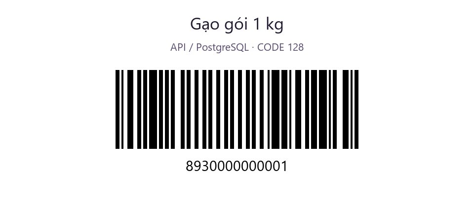
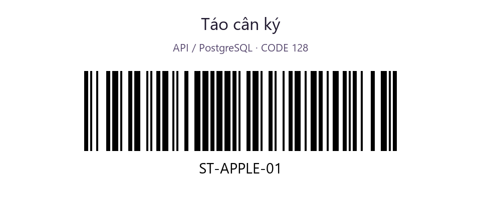
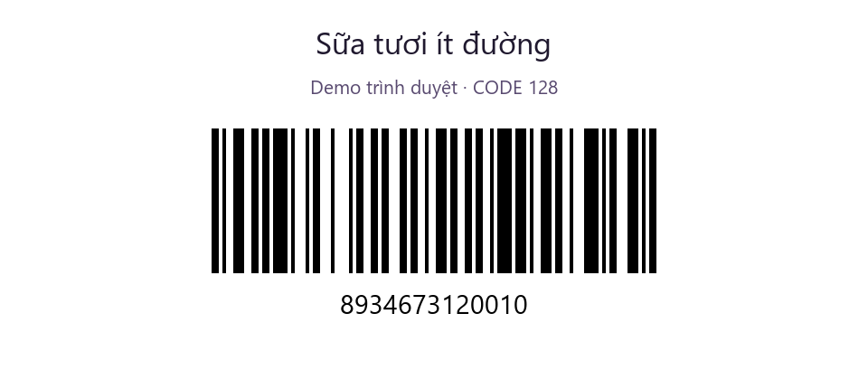
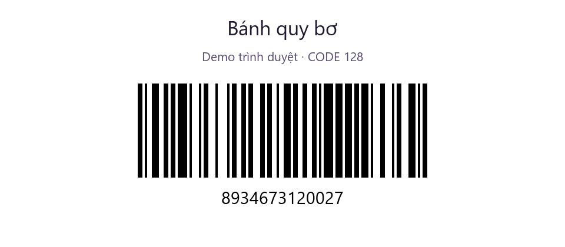

Tải ảnh Gạo gói 1 kg
Tải ảnh Táo cân ký
Tải ảnh Sữa tươi ít đường
Tải ảnh Bánh quy bơMở ảnh trên máy tính hoặc in rõ trên giấy rồi quét bằng điện thoại. Chọn ảnh đúng chế độ ứng dụng đang dùng; mã mẫu chỉ tìm được khi sản phẩm tương ứng có trong danh mục.
Hai mã API dùng danh mục gạo và táo của bản demo server. Hai mã demo dùng dữ liệu riêng trong trình duyệt. Giữ nguyên toàn bộ chuỗi, kể cả số 0 ở đầu. Đây là mã CODE 128; không đổi sang EAN-13.

Tải ảnh Gạo gói 1 kg
Tải ảnh Táo cân ký
Tải ảnh Sữa tươi ít đường
Tải ảnh Bánh quy bơ